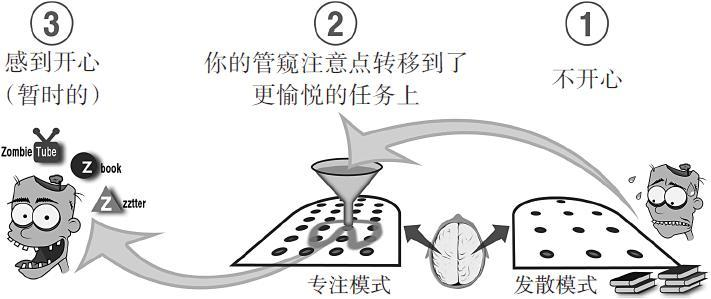

第5章 预防拖延
化“坏”习惯为好帮手
长达几个世纪以来，杀人者都对砒霜青睐有加。只要在早餐面包上撒一点，用不了一天你就会痛苦地一命呜呼。然而，在1875年的德国文理协会第48届会议上，有两个人坐在观众面前，轻松从容地服下了两倍于致命剂量的砒霜。可想而知，那时大家有多震惊！可第二天，他们又面带微笑，健康如故地回到了会场。尿检显示二人并没有使诈，他们确实服食了毒药。[1]
但是怎么可能有人服毒却不死，甚至看起来若无其事呢？
这个看似无关的故事与我们将要讲到的拖延问题有许多可以类比之处。了解一些拖延症的认知心理学原理，就如同了解毒药的化学原理一样，能够帮助我们形成有益健康的预防机制。
本章和下一章我们会教读者克服拖延症的“懒方法”。想要学会它们，你首先需要了解自己内心的“小恶魔”，也就是大脑对某些特别暗示做出的习惯性反应。这些“小恶魔”常教唆人们贪图一时之快。不过你会学到，如果有必要（因为并非所有的拖延都是无益的），有时你也可以利用这些“小恶魔”来帮你抵抗拖延行为[2]。在这之后还会有专门的章节来帮你深入地开发自己的组块能力，而最后会提供一些克服拖延症的建议、方法及容易上手的工具。
首先要记住，陷入拖延很简单，但获得顽强的意志力可就难得多了。因为后者需要动用大量的神经资源。可以说用意志力来对抗拖延，就像在空中喷洒廉价劣质的空气清新剂一样完全徒劳无功。除非万不得已，否则不要把意志力浪费在抵抗拖延上。而我要告诉你的好消息则是，你根本就不需要“万不得已”。
又是砒霜，又是“小恶魔”，听上去确实有点恐怖。如果不靠意志力抵抗，我还能有救吗？
当然有救！先来看看这个实验吧！没什么能比实验更有趣的了！
分心与拖延
拖延是我们这代人最大的毛病之一，有太多事情让我们分神。我总是想“我就先看一下Facebook、Twitter、Tumblr，再查一下邮件，就去做作业”。然而等我意识到的时候，我已经花了不止一个小时来浏览社交网站。就算我终于开始做作业了，这些社交网站的后台推送也还是在不断地干扰我。
我需要找到一个让自己集中精神听课、做作业的方法，这在很大程度上取决于周围的环境和时间。我确实不应该把所有的事都拖到最后一秒。
——一名学习微积分的学生
拖延与不安
想象一下，你第一次参加马拉松。要是直等到比赛前一晚才开始首次训练跑，毫无疑问，你的小腿肌肉一定会疼到尖叫。同样的道理，你也不能指望只靠临阵磨枪，就能通过数学或科学考试。
对于大多数人来说，学数学或科学依赖于两个过程：一是短暂的学习期，这是“神经砖块”垒砌的过程；二是学习期之间的间隔，就是“思维水泥”凝固的过程。这样的时间节奏意味着，能否掌控拖延对数学和科学专业的学生至关重要，[3]而拖延问题在学生中恰恰又实在太普遍了。
现实就是，我们拖延的，往往是让我们感到不安的事情。[4]医学成像研究显示，恐惧数学的人会回避数学，因为仅是想到数学就让他们畏缩了。当他们冥思苦想地对付数学时，大脑中的痛觉中心就会被激活。[5]
值得注意的是，令人痛苦的就是预感本身。当“数学恐惧症”患者真正开始学数学的时候，痛苦就消失了。研究拖延症的专家丽塔·埃是这样解释的，“对一项任务的恐惧会比这项任务本身消耗更多的时间和能量。”[6]
回避痛苦似乎无可厚非，但习惯性的回避会带来非常糟糕的长期影响。现在拖着不去学数学，结果后来连想起它都觉得痛苦；一直拖着不做SAT或ACT的练习题，到了考试那天就紧张得快要窒息。这全都是因为你的神经基础就没有打牢，你根本没做好准备，怎么可能泰然自若地面对所需的材料。理所当然，奖学金就这样打水漂了。
也许你本想投身数学或科学领域，但你放弃了，转投他业。你对别人的说辞是败给了数学，事实上你只是败给了拖延症。
拖延是个极具影响力的“关键”恶习，[7]它会影响你人生的诸多方面。而一旦做出改变，数不尽的积极变化就会铺展在你的眼前。
不止如此，还有重要的一点，那就是人们往往讨厌做自己不擅长的事情。但如果你开始对某件事游刃有余，自然就会乐在其中了。
大脑是如何拖延的
哔哔哔……现在是周六早上10点整，你被闹钟从酣睡中拖出来。又用了一个小时，你终于离开床，抱着咖啡，伏在了书本和笔记本电脑前。接下来可有一整天的学习计划：你要搞定周一要交的数学作业，历史作文也该动笔了，对了，还要看看化学的疑难部分。
你盯着数学书，发出一声微不可察的叹息。想想那些难懂的图表和一股脑儿奇怪的术语，你大脑的疼痛区域简直在闪闪发光。你可真不想做数学作业，但计划表上接下来的几小时都归它所有，现在你连数学书都不想翻开了。
真实情况大概是这样的：你的注意力从教材溜到了笔记本电脑那里，然后脑袋就不疼了。掀起笔记本显示屏查看消息的一瞬间，你甚至还有点雀跃，还是来看看杰西发来的搞笑图片吧……
两个小时一闪即逝，可你的数学作业还是一个字都没动。

这就是典型的拖延症状。每次想到不怎么喜欢的事都会激活大脑中的痛觉中枢，所以你就会逃到那些令你更开心的事情中去，[8]获得暂时性的感觉良好。
拖延会成瘾。它所提供的片刻兴奋与解脱是乏味现实的避风港。因此，你轻而易举地欺骗自己，上网查资料比看课本、做作业更能高效地利用一切时间；你也会自欺欺人地编故事：比如有机化学需要空间推理，而这正是你的弱项，所以你学不好是天经地义的；还有那些冠冕堂皇的荒唐借口：如果我考试前很久就开始学，我会忘。（你可别忘了，别的科目还有考试，到考试那天要一次学完所有欠下的科目，可就难于上青天了。）直到学期接近尾声，不得不开始为期末考试拼命恶补的时候，你才会面对现实。那就是，你之所以把有机化学弄成这个样子，无非是因为自己拖着不学而已。
研究者发现，拖延症不仅可以作为技不如人的借口，甚至会成为虚荣心的温床。“我做完了实验报告，参加了市场调查之后，昨天才开始备考的。当然啦，我本来可以做得更好。但有这么多事要忙，这样已经很不错啦。”[9]更有甚者，哪怕是那些努力学习的人，也会误以为拖延能让他们显得精明能干：“我是昨天一晚上补完的期中考试内容哦！”
积习难改，人们很容易就会深深陷入拖延的陷阱。在它的暗示下，你任由自己沉沦于拖延的舒适反应。久而久之，已经习惯性拖延的你会身不由己地寻求那短暂而微小的愉悦感。而这种习惯性反应让你渐渐失去从前的自信，最后干脆不再指望能提高工作效率。这就是为何拖延症患者总宣称自己压力大、身体差、表现不好。[10]如果放任下去，坏习惯就会根深蒂固，到那时再想摆脱它就悔之晚矣了。[11]
改变的可能
我曾习惯性拖延，但现在不一样了。还是高中时的大学预科课程让我实实在在地进入了学习状态。老师每晚布置的美国历史作业，要花上4~6个小时。那时我学会了一次一项，逐一完成。我发现要是完成一项任务，这种成就感就能让我更轻松地坚持下去，保持状态。
——葆拉·米特尔（Paula Meerschaert）
创意写作，大一新生
说一件事你肯定不陌生：偶尔有那么几次，只靠通宵补习也还能得个不错的分数，而且清早完工的时候甚至有点兴奋。这就像赌博一样，一点小成功会让你心存侥幸，重蹈覆辙。你甚至开始说服自己——拖延是与生俱来的特质，本就是你的一部分，跟身高或发色没什么两样。毕竟，如果拖延症那么好治，你不是早就该摆脱它了吗？
然而，随着你所接触的数学和科学领域越高深，掌控拖延就越发重要。曾经屡试不爽的习惯，最终会回过头来给你当头一棒。在接下来几章里，我会讲讲如何掌控自己的习惯。做决定的该是你自己，而非那些好心好意但不过大脑的“小恶魔”——你的习惯。你会发现，克制拖延的方法并没有那么难，它们只是没那么显而易见而已。
让我们回到本章开头的那个故事。两位实验者事先服用过极少量的砒霜。微量的砒霜对人的危害并不大，甚至会让人产生免疫力。这种做法可以让你之后承受更大的剂量，还显得健康如故。然而，在肉眼不可察之处，它们会潜移默化地增加你的癌症风险，并损坏你的器官。
同样，拖延症患者起初也只是拖延了一点点。可一次又一次地拖延最终让他们泥足深陷。他们也许暂时看上去毫无问题，但长此以往呢？
恐怕不会太好。
水滴石穿
有个学生跟我抱怨考试没通过，还告诉我考前一天他学了整整10个小时，我说，“这就是你没过的原因”，学生不可思议地看着我，我的回答是：“你应该坚持每次学习一点点。”
——理查德·纳德尔（Richard Nadel）
佛罗里达州，迈阿密，佛罗里达国际大学，数学高级讲师
本章小结
·我们所拖延的都是感到不舒服的事情。但从长远来看，贪图一时之快未必对我们有益。
·拖延就像在服用微量的毒药。一时看不出影响，但日积月累，危害极大。
驻足与回顾
在第4章中我们了解到，新地点遇到旧内容有助于回忆材料。这能帮你摆脱地点的暗示。之后无论身在何处，你都可以更自如地回忆材料内容——参加考试时这一点往往很有用。
现在我们来试试这个理论。本章有哪些主要思想？你可以在现在所处的地方回想，但稍后请去另外一个房间试试，要是你出门时也想想就更好了。
学习提升
1.拖延的习惯对你的生活有影响吗？如果有，是如何影响的？
2.关于别人拖延的借口，你是否听说过多个版本？你能看穿这些故事的破绽吗？你的拖延借口又有怎样的漏洞？
3.列举一些无须过度依赖意志力，但曾经帮助你克服拖延的具体做法。
积极寻求好建议：工程教育界的领军人物诺曼·福滕伯里的感悟
大一的时候，我就下定决心想成为一名工程师，所以我报名了“应用微积分”，而不是和大多数同学一样选择了“初阶微积分”。这是个错误的决定。因为学习“应用微积分”的同学大多在高中就已经接触过微积分的课程，现在只需要对已有的知识扩展深化。所以我开局不利。
更要命的是，和我学过同一版本微积分的人少之又少，几乎找不到学习搭档。不像高中，在大学自学可没有奖金（有罚款却是真的）。在工程学领域，团队合作是重要的专业素养之一，教授通常也会默认你在跟别人合作学习，并据此安排家庭作业。最后我勉强得了个B，但我总觉得，我对微积分基础以及后续需要用到微积分的课程，都缺乏一个完整概念和直观理解。因此，为了日后其他课程中与微积分有关的部分，我及时地进行了大量的学习。但这耗费了我太多本该可以投入到其他事情中的时间。
能够顺利毕业并拿到机械工程本科学位，我觉得自己很幸运。在同学和老师的鼓励和指导下，我又继续读完了机械工程专业的硕士和博士课程。说了这么多，有一点希望你们能用心记住，选课时要问问同龄人和老师的建议。大家的智慧肯定会帮到你。
[1] Emsley 2005，p.103.
[2] Chu and Choi 2005；Graham 2005；Partnoy 2012.
[3] Steel（2007，p.65）提到：“根据估测，80%～95%的大学生处于拖延状态……大约75%认为自己是拖延者……几乎50%的人有持续的拖延问题。拖延的绝对总量是巨大的，据学生反应，拖延状态一般要占日常活动的1/3，通常是发生在睡觉、玩耍或是看电视的活动上……更有甚者，这个比例有上升趋势…除了出现在大学期间，拖延现象也在人群中广泛存在，它长期影响着15%～20%的成年人。”
[4] Ainslie and Haslam 1992；Steel 2007.
[5] Lyons and Beilock 2012.
[6] Emmett 2000.
[7] 更多综合讨论可见于Duhigg 2012，其换过来引用了Weick 1984中的内容.
[8] Robert Boice（1996，p.155）提到，拖延似乎使清醒意识区的范围缩小了。另请见pp.118-119.
[9] Boice 1996，p.176.
[10] Tice and Baumeister 1997.
[11] Boice 1996，p.131.